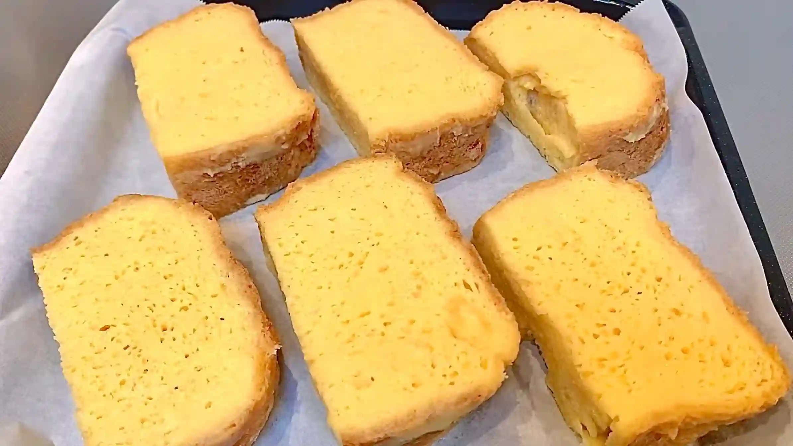
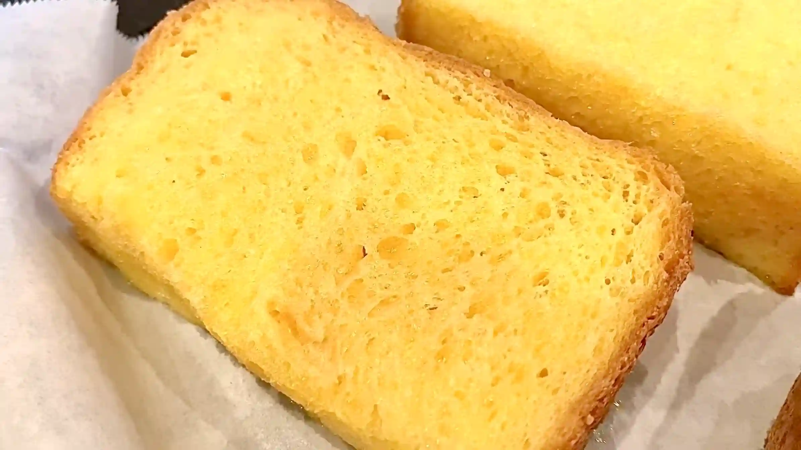
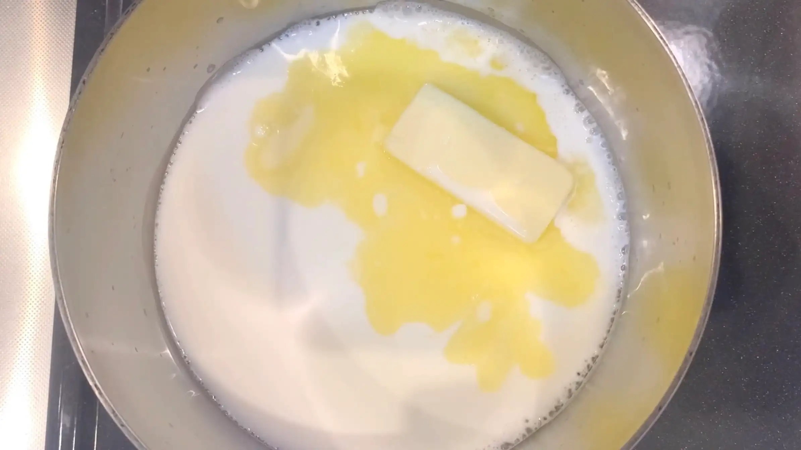

材料 6個分
※粉量を変えると自動計算されます
米粉食パン(1斤)
卵液(アパレイユ)
飾り
作り方
生地
STEP 1
お好みの食パンを準備する
レシピではホームベーカリーで米粉の食パンを焼きましたが、お好みの食パンをお使いください。食パンの種類や厚みによって卵液の染み込み方や焼き上がりが変わるため、厚切りにする場合は卵液が中まで染み込むよう、少し時間をかけて浸してください。
レシピではホームベーカリーで米粉の食パンを焼きましたが、お好みの食パンをお使いください。食パンの種類や厚みによって卵液の染み込み方や焼き上がりが変わるため、厚切りにする場合は卵液が中まで染み込むよう、少し時間をかけて浸してください。
STEP 2
卵液を作る
STEP 3
食パンを好きな形にスライスし、卵液につけて常温で10分おく（夏場は冷蔵してください）
食パンを卵液に浸し、まずは片面に卵液を染み込ませます。夏場は室温に長時間置かないよう、冷蔵庫で浸してください。
食パンを卵液に浸し、まずは片面に卵液を染み込ませます。夏場は室温に長時間置かないよう、冷蔵庫で浸してください。
STEP 4
ひっくり返してさらに10分おく
もう片面からも卵液を染み込ませることで、パンの中心まで卵液がしっかり行きわたり、しっとりとした食感に仕上がります
もう片面からも卵液を染み込ませることで、パンの中心まで卵液がしっかり行きわたり、しっとりとした食感に仕上がります
STEP 5
天板にオーブンシートを敷き、パンを並べる
卵液を十分に吸ったパンは柔らかくなっているため、形を崩さないようにそっと天板へ移します。
卵液を十分に吸ったパンは柔らかくなっているため、形を崩さないようにそっと天板へ移します。

STEP 6
予熱なしのオーブン180℃で25分焼く
フライパンで焼くと火加減によっては表面が先に焦げてしまうことがあります。今回は予熱していないオーブンでじっくり火を通すことで、表面を焦がさず中までしっかり火を入れ、まるでプリンのようになめらかでリッチな味わいに仕上げます。
フライパンで焼くと火加減によっては表面が先に焦げてしまうことがあります。今回は予熱していないオーブンでじっくり火を通すことで、表面を焦がさず中までしっかり火を入れ、まるでプリンのようになめらかでリッチな味わいに仕上げます。

卵液
STEP 1
鍋に牛乳、バター、グラニュー糖を入れ火にかけ、バターが溶けたら一度冷ます
バターが溶けたら、卵と合わせる前に一度冷まします。熱いまま卵に加えると卵が固まってしまうため、人肌程度まで冷ましてから次の工程へ進みます。
バターが溶けたら、卵と合わせる前に一度冷まします。熱いまま卵に加えると卵が固まってしまうため、人肌程度まで冷ましてから次の工程へ進みます。

STEP 2
とき卵に温めた牛乳液を加え、お好みでバニラエッセンスを入れて混ぜる
冷ました牛乳液をとき卵に加え、全体が均一になるまで混ぜます。バニラエッセンスを加えると、焼き上がりに甘く華やかな香りが加わります。
冷ました牛乳液をとき卵に加え、全体が均一になるまで混ぜます。バニラエッセンスを加えると、焼き上がりに甘く華やかな香りが加わります。
動画でチェック
おいしく作るためのワンポイントコラム
フライパンで焼くのとはひと味違う！じっくり火を通すことで、まるでプリンのような滑らかでリッチな食感に仕上がります。 お好きな食パンに溶かしバター入りの特製卵液を染み込ませて焼く『オーブン焼きフレンチトースト』。理想の食感と香ばしい風味を引き出すための「2つのコツ」をまとめました。
① 濃厚なコクを閉じ込める卵液のコツ
一番のポイントは、卵液に溶かしバターを直接混ぜ込んでおくことです！そして生地を片面10分ずつ、計20分間じっくり浸すことで、パンの芯までバターのコクと卵の旨みがじんわりと行き渡ります。普段の私はこういうひと手間を「面倒だな…」と思って飛ばしてしまうタイプなのですが、これだけは別！溶かしバター入りの卵液をしっかり染み込ませるこのひと手間で、焼き上がりの風味が格段にアップして驚くほど美味しく仕上がります。
② 絶妙な食感を生み出すオーブン焼成のコツ
フライパンではなく、予熱なしの180℃のオーブンで25分間じっくり焼くのが最大のポイント。急激な熱を入れずに火を通すことで、表面の焦げを防ぎ、まるでプリンのような滑らかな食感とリッチな味わいを生み出します。
「オーブンで焼く」と聞くと少し手間がかかる印象かもしれませんが、実はフライパンのようにずっとコンロに付きっきりで火加減を気にする必要がないため、放置できてとっても簡単！お料理に自信がない方にこそ試してほしい方法です。中までじんわり染み込んだフレンチトーストは、「パン屋さんで買ってきたの？」と言われるくらい本格的なお味に。焼き上がりに広がる甘い香りと贅沢な美味しさを、ぜひお楽しみください！
① 濃厚なコクを閉じ込める卵液のコツ
一番のポイントは、卵液に溶かしバターを直接混ぜ込んでおくことです！そして生地を片面10分ずつ、計20分間じっくり浸すことで、パンの芯までバターのコクと卵の旨みがじんわりと行き渡ります。普段の私はこういうひと手間を「面倒だな…」と思って飛ばしてしまうタイプなのですが、これだけは別！溶かしバター入りの卵液をしっかり染み込ませるこのひと手間で、焼き上がりの風味が格段にアップして驚くほど美味しく仕上がります。
② 絶妙な食感を生み出すオーブン焼成のコツ
フライパンではなく、予熱なしの180℃のオーブンで25分間じっくり焼くのが最大のポイント。急激な熱を入れずに火を通すことで、表面の焦げを防ぎ、まるでプリンのような滑らかな食感とリッチな味わいを生み出します。
「オーブンで焼く」と聞くと少し手間がかかる印象かもしれませんが、実はフライパンのようにずっとコンロに付きっきりで火加減を気にする必要がないため、放置できてとっても簡単！お料理に自信がない方にこそ試してほしい方法です。中までじんわり染み込んだフレンチトーストは、「パン屋さんで買ってきたの？」と言われるくらい本格的なお味に。焼き上がりに広がる甘い香りと贅沢な美味しさを、ぜひお楽しみください！


おうちでパン屋さんのような本格的な味が楽しめる『オーブン焼きフレンチトースト』のレシピです。贅沢な特製卵液をじっくり染み込ませて焼き上げます。コラムでは「濃厚なコクを閉じ込める卵液のコツ」「絶妙な食感を生み出すオーブン焼成のコツ」の2つのポイントを解説します。